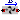
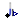

Extends from Modelica.Icons.SensorsPackage (Icon for packages containing sensors).
| Name | Description |
|---|---|
|  FlowMeasure | Volumetric flow between ports |
|  PressureMeasure | Hydraulic pressure at port |
Volumetric flow between ports
Extends from Interfaces.OnePort (Hydraulical OnePort), Icons.FlowMeasure.
| Name | Description |
|---|---|
| q_in | Volume inflow |
| q_out | Volume outflow |
| volumeFlow | Actual volume flow rate [m3/s] |
Hydraulic pressure at port
Extends from Icons.PressureMeasure.
| Name | Description |
|---|---|
| q_in | |
| pressure | Pressure [Pa] |